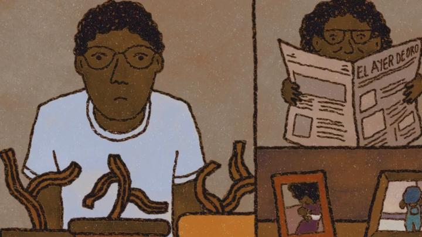

"Olivia and the Clouds" is one of seven feature films in competition at OIAF 2024. It's also one of THREE of those films where one of their lead characters is an animator by trade. They say you should "write what you know," but I can't help but wonder if this trend of excessive navel-gazing will harm the indie animation scene in time. Anyway, "Olviia and the Clouds" is experimental in multiple ways, and isn't going to please mainstream viewers.The movie is actually separated into three chapters: "Olivia and the Clouds" is roughly 20 minutes, "Ramon and the Plants" is nearly an hour long, and "Olivia and Ramon" is a short addendum at a few minutes long, helping connect the previous two stories. All three seem to be independent stories that happen to reuse character names, but one can argue that they fit together. They all feature surreal storylines of human relationships, where the man being insenstive ruins things. The first involves a young man not being as attentive as he should be with his girlfriend, causing her to feel invisible, while his mother's friend under her bed goes missing. The second story involves a lonely middle-aged man kissing a stranger, getting slapped for it, spitting in a plant pot at home, and waking up to see a new plant that talks the next day - a possible romantic partner, but again, he ruins things. A lot can be said about romantic relationships and the human condition, but there isn't much new or deep or profound here. Frankly, American primetime sitcoms say more on the topic than what's conveyed here. On the other hand, roughly half of my plot summary might sound bizarre to you and get your attention. It does help give the movie purpose, but the stories are so tedious (and ultimately, don't resolve anything at all), that I felt annoyed to have sat through it. One good thing about the film is the visual composition. By not shying away from experimental storytelling, the movie will play with frame shapes and sizes to interesting effects. There are some interesting film techniques at work here. Otherwise, it's a mixed media movie, using live-action and stop-motion at times, but primarily 2D animation... but even the 2D parts vary wildly in styles, with the same characters, as if several different animators worked without talking to each other. In every style, scenes and characters are simplisitic. A lot of effort must have been put in the animation though - there's movement in almost every shot.  For independent animators, the big question should be "why?" Why make this a feature film instead of a short film? Especially for experimental storytelling with a lack of a plotline, I'd be more forgiving if this was 10, maybe 15 minutes, which would be plenty to cover everything the film wanted to cover. As a feature, there's no love lost with "Olivia and the Clouds."
- "Ani" More reviews can be found at : https://2danicritic.github.io/ Previous review: review_Oliver_&_Company Next review: review_On-Gaku_-_Our_Sound